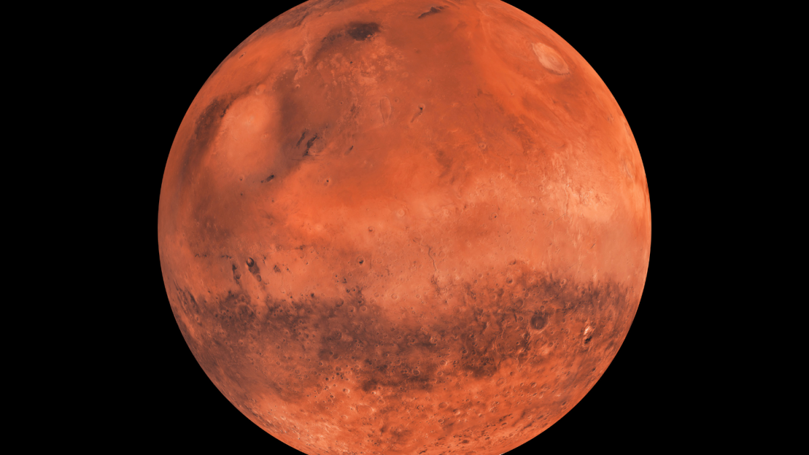
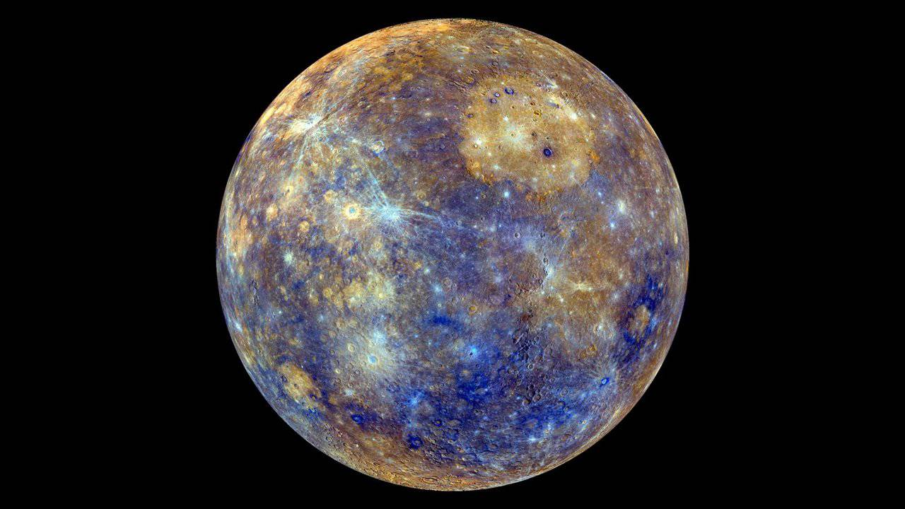
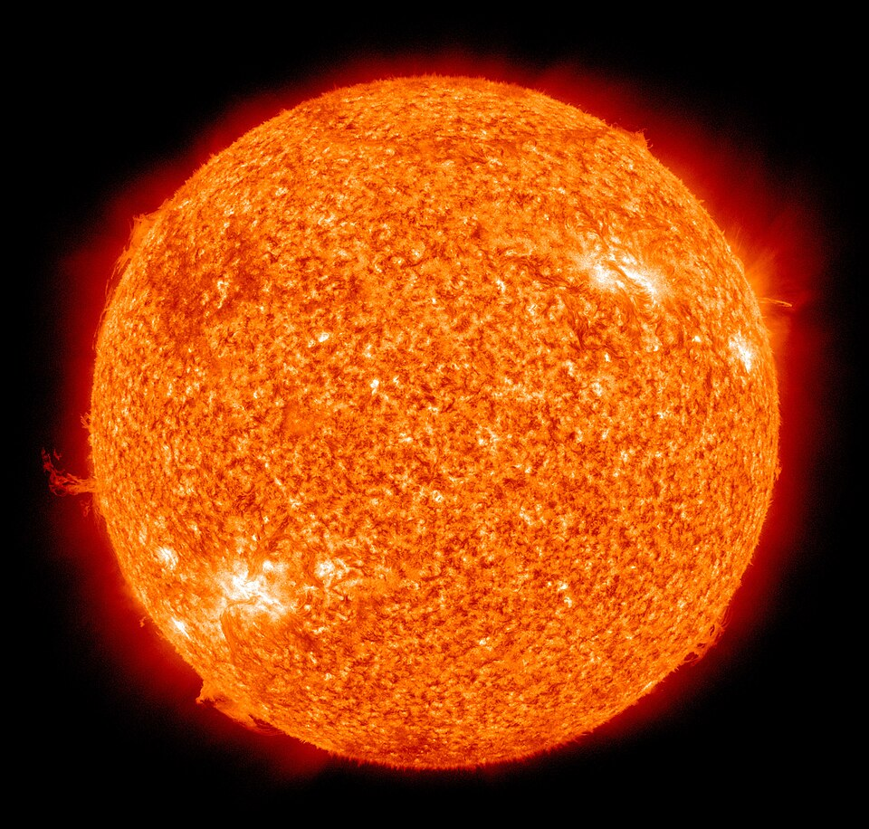
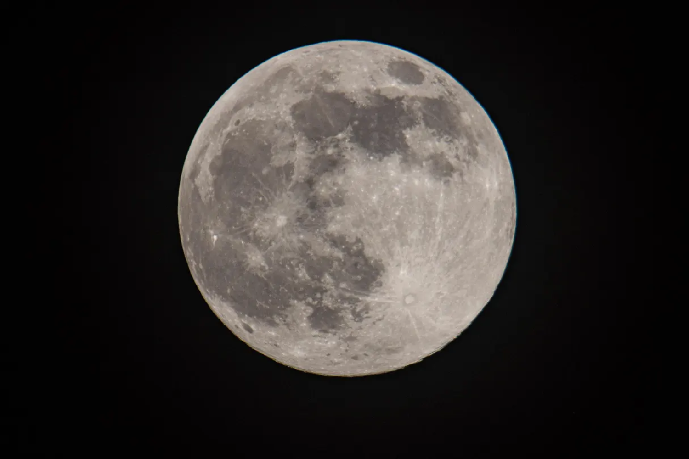

Planeta Terra
O único planeta conhecido por abrigar vida.
Nosso planeta natal, a Terra, é um mundo vibrante com oceanos de água líquida, uma atmosfera rica em oxigênio e uma biodiversidade impressionante.
Saiba Mais Sobre TerraEscolha um Planeta:

Terra

Marte

Saturno

Mercúrio

Sol
Shiba Inu

Shiba Inu